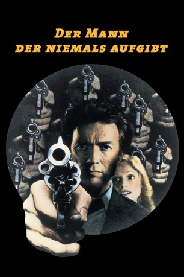

#3945 Der Mann, der niemals aufgibt
Alternativ: The Gauntlet
 
 IMDB-Wertung: 6.4 / 10
IMDB-Wertung: 6.4 / 10  Metascore: 0
Metascore: 0 
Ben Shockley, ein cooler Streifenpolizist, soll einen Zeugen aus dem Gefängnis von Las Vegas holen. Der Zeuge "Gus" entpuppt sich als eine hübsche Zeugin, die sich weigert, die Zelle zu verlassen. Kein Wunder, denn als Ben die gefesselte Augustina Mally zum Auto bringt, fliegt es plötzlich in die Luft - gerade noch rechtzeitig, so daß Ben über Augustinas Warnung nachdenken kann: Die Mafia ist hinter ihr her. Nun kämpfen sich die beiden von einer tödlichen Falle in die nächste.
Jahr: 1977
Dauer: 109 Minuten
FSK: 16
Land: USA Studio: Warner Bros A Warner Communications CompanyTonspuren: DD1.0 - ,
Untertitel:
Auflösung: 1080p (1920x800) Größe: 8140 MB
Genre: Action, Thriller
Regisseur:  Clint Eastwood
Clint Eastwood
Drehbuch: Brian Lynch
Soundtrack:
Darsteller:
 Clint Eastwood als Ben Shockley
Clint Eastwood als Ben Shockley Sondra Locke als Gus Mally
Sondra Locke als Gus Mally Pat Hingle als Josephson
Pat Hingle als Josephson William Prince als Blakelock
William Prince als Blakelock Bill McKinney als Constable
Bill McKinney als Constable Michael Cavanaugh als Feyderspiel
Michael Cavanaugh als Feyderspiel- Carole Cook als Waitress
 Doug McGrath als Bookie
Doug McGrath als Bookie Roy Jenson als Biker
Roy Jenson als Biker- Roger Lowe als Paramedic Driver
- Marneen Fields als Biker Chick , uncredited
- Rae Sunshine Lee als Crowd Onlooker , uncredited
- Steve Wargo als Man in Airport , uncredited
 Tom Willett als Prisoner , uncredited
Tom Willett als Prisoner , uncredited Mara Corday als Jail Matron
Mara Corday als Jail Matron- Jeff Morris als Desk Sergeant
- Samantha Doane als Biker
 Dan Vadis als Biker
Dan Vadis als Biker- Carver Barnes als Bus Driver
- Robert Barrett als Paramedic
- Teddy Bear als Lieutenant
- Mildred Brion als Old Lady on Bus
- Ron Chapman als Veteran Cop
- Don Circle als Bus Clerk
- James W. Gavin als Helicopter Pilot
- Thomas H. Friedkin als Helicopter Pilot
- Darwin Lamb als Police Captain
- Fritz Manes als Helicopter Gunman
- John Quiroga als Cab Driver
- Josef Rainer als Rookie Cop
- Art Rimdzius als Judge
 Al Silvani als Police Sergeant
Al Silvani als Police Sergeant- Michael L. Cooley als Biker , uncredited
- Dennis Jenkins als Biker , uncredited
- Mike Mangiaruca als Tall Skinny Dark Haired Bearded Biker, wearing denim vest & sunglasses , uncredited
- Butch Price als Police office , uncredited
- Terry D. Seago als Cop , uncredited
Datei: X:\1977\Mann, der niemals aufgibt, Der (1977, FSK16, 1920x800).mkv seit 05.07.2016
Festplatte: HD 1971-1979
 Es gibt insgesamt 33 Filme in der Gruppe '1977'
Es gibt insgesamt 33 Filme in der Gruppe '1977'